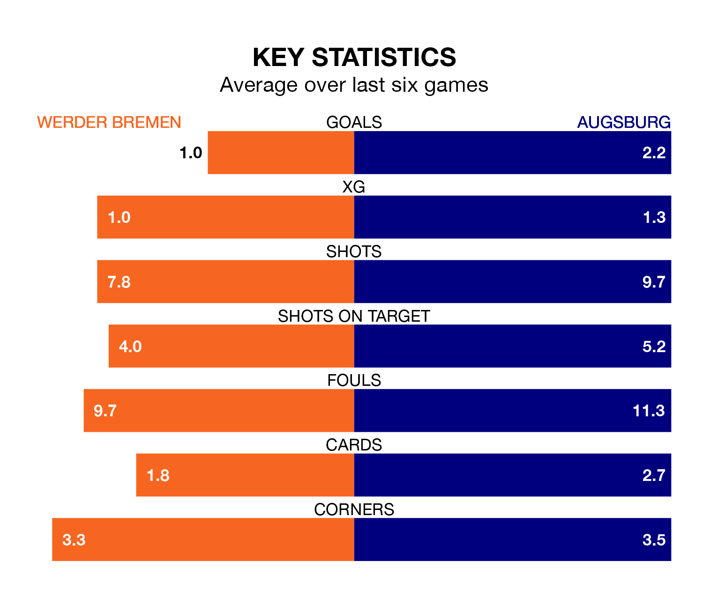

Augsburg face Werder Bremen on Saturday seeking to protect their long unbeaten run in the Bundesliga.
Augsburg are unbeaten in six, with three wins and three draws, ahead of the 2.30pm kick-off.
They face a Werder Bremen team who have won one and drawn two over the same number of games.
In the last 10 years, Werder Bremen and Augsburg have played each other on 17 occasions. Werder Bremen won seven of them and Augsburg 10.
On average, Werder Bremen scored 1.7 goals and Augsburg 1.9 in those matches.
Their last meeting was on March 4, when Augsburg won 2-1 at home.
With 18 goals in 13 games so far this season, Werder Bremen are scoring at below the league average rate with 1.4 goals per game. And they are conceding more than average, letting in 27 goals at a rate of 2.1 per game.
Augsburg, meanwhile, are above average scorers, with 1.8 goals per game, compared to a league average of 1.7. They have conceded 1.9 goals per game.
The home side are 13th in the table after 13 games, of which they have won three and drawn two, earning 11 points.
The visitors are four places ahead of Werder Bremen in ninth, with four wins and five draws putting them on 17 points.
Augsburg's Ermedin Demirović is among the league's most creative players, racking up five assists in 13 appearances so far this season, and holding third spot in the Bundesliga's assist charts.
For Werder Bremen, Niclas Füllkrug has set up the most goals, having laid on four assists in 13 games.
Werder Bremen's last match was on Saturday, a 2-0 loss against Stuttgart.
Augsburg beat Eintracht Frankfurt 2-1 last time out, on Sunday, with Fredrik Jensen and Iago Borduchi on the scoresheet.
